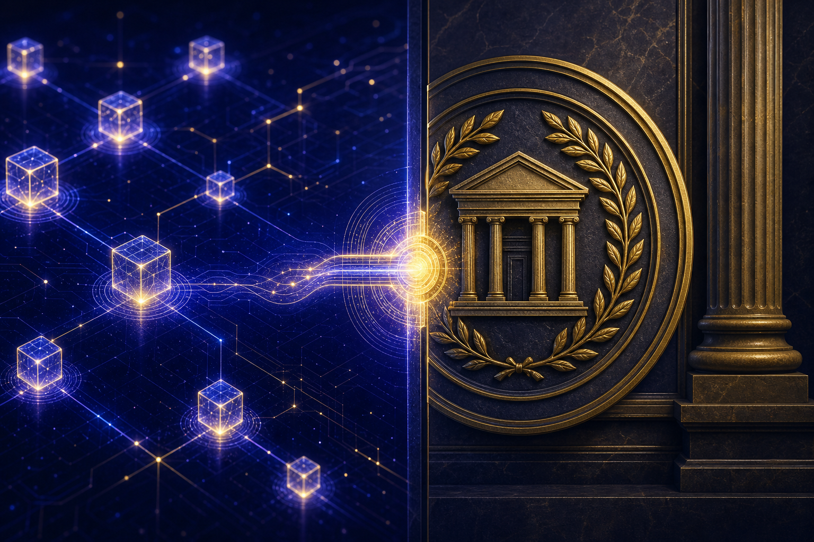

Bridging Code and Law: How Wyoming DAO LLCs Combine On-Chain Governance with Legal Compliance
An investor's guide to the Wyoming DAO LLC framework — how the Foundation's subsidiaries combine legally recognized on-chain governance with the liability protections and compliance infrastructure of traditional corporate law.

The Governance Paradox in Decentralized AI Development
Decentralized governance structures — DAOs (Decentralized Autonomous Organizations) built on blockchain infrastructure — have attracted significant attention as a mechanism for coordinating large groups of stakeholders without centralized control. The appeal is real: smart contract-governed voting can be transparent, auditable, tamper-resistant, and participatory in ways that traditional corporate governance is not.
The problem is legal recognition. A DAO without a legal wrapper is, in most jurisdictions, an unincorporated association — an entity type with unlimited personal liability for its members, no legal personality to enter contracts or hold assets, and no clear regulatory status. The governance efficiency gains of on-chain voting are largely negated if the entity cannot open a bank account, sign a lease, or defend itself in litigation.
Wyoming solved this problem in 2021 with legislation that created the DAO LLC — a limited liability company specifically authorized to use smart contract or blockchain governance as its operating mechanism, while retaining the legal personhood, liability protection, and contractual capacity of a traditional LLC. Several of the Foundation's 33 Wyoming Series LLC subsidiaries, including the Robotics DAO, are organized as DAO LLCs under this framework.
This article explains the Wyoming DAO LLC structure, how it operates in the Foundation's subsidiaries, and what it means for investor governance rights and compliance.
The Wyoming DAO LLC: Statutory Foundation
Wyoming Statutes § 17-31-101 et seq. (the "DAO LLC Act"; cite subject to legal verification) authorize the formation of LLCs that are "algorithmically managed" — meaning that governance decisions are made, in whole or in part, through smart contracts executed on a blockchain rather than through traditional member votes or manager decisions.
Key features of the Wyoming DAO LLC framework as the Foundation intends to utilize it:
**Legal personhood:** A Wyoming DAO LLC is a legally recognized entity that can hold assets, enter contracts, sue and be sued, and be regulated as a legal entity. This resolves the fundamental problem of unincorporated DAOs.
**Member liability protection:** Members of a Wyoming DAO LLC have liability protection analogous to traditional LLC members — their personal assets are not exposed to the LLC's debts and obligations.
**Smart contract governance:** The DAO LLC's operating agreement can incorporate smart contracts as the authoritative governance mechanism. Token-weighted voting, proposal submission, quorum requirements, and vote execution can all be defined in and executed by smart contract code rather than by human administrators.
**Disclosure requirements:** Wyoming DAO LLCs must maintain certain public disclosures, including the smart contract address through which governance is conducted, enabling public auditability of governance activity.
*Note: The Wyoming DAO LLC Act is recent legislation and its application in the Foundation's specific context involves interpretive questions that have not been fully resolved by case law or regulatory guidance. The legal descriptions above represent the intended operation of the framework and should be confirmed by qualified Wyoming counsel.*
On-Chain Governance in Practice: The Robotics DAO Illustration
The Robotics DAO (illustrative name for a series within 66-W3 LLC) provides a concrete illustration of how on-chain governance operates within the Foundation's structure.
The Robotics DAO is organized as a Wyoming DAO LLC series. Its governance token (illustrative) is held by a combination of the Foundation (as controlling member), external operational partners, and — in the intended structure — potentially qualified retail participants who hold governance-bearing interests.
**Proposal submission:** A member holding at least a threshold number of governance tokens (illustrative: 1% of outstanding tokens) can submit a governance proposal via the Robotics DAO's smart contract interface. Proposals might include: a new commercial partnership, a capital allocation decision, a change to the DAO's operating parameters, or a request for the DAO to take a specific contractual action.
**Deliberation period:** The smart contract enforces a deliberation period (illustrative: 7 days) during which proposals are publicly visible and members can discuss them through associated off-chain forums or communication channels. During this period, token holders can signal their voting intention without committing their vote.
**Voting:** At the close of the deliberation period, voting opens for a defined period (illustrative: 3 days). Token holders vote through the smart contract interface. Votes are weighted by token holdings, subject to any quadratic or other weighting mechanisms built into the contract.
**Execution:** If a proposal clears the required quorum and approval threshold (illustrative: 10% quorum, 66% approval), the smart contract either executes the approved action automatically (for actions that can be executed on-chain) or triggers a verified execution mechanism for actions requiring off-chain legal steps — signing a contract, authorizing a payment, submitting a regulatory filing.
The key compliance bridge is the last step. On-chain voting produces a legally documented governance decision that is then implemented through the DAO LLC's legal structure — not a rogue unilateral action by code, but a member decision implemented through legal process.
The Compliance Infrastructure: Where Code Meets Law
The Wyoming DAO LLC framework bridges code and law at several specific points:
**Operating agreement primacy:** The DAO LLC's operating agreement — a legally binding contract among members — establishes the smart contract as the authoritative governance mechanism. This means the smart contract's outputs are legally binding on members, not merely advisory. A member who disagrees with a governance vote cannot simply ignore it; they are bound by the operating agreement that incorporates the smart contract's results.
**Regulatory compliance routing:** Actions that require regulatory compliance — filings, approvals, licenses — are triggered by on-chain votes but executed through the DAO LLC's legal infrastructure. The DAO's designated manager (or management committee) has authority to execute regulatory compliance steps on behalf of the DAO, acting on instructions from the governance mechanism.
**AML/KYC for governance participants:** Governance token holders who are also investors or commercial counterparties are subject to the Foundation's AML/KYC procedures. Governance participation is not anonymous; it is tied to verified identity through the DAO's legal membership structure. This is a departure from the anonymity model of early DAOs, but it is necessary for legal compliance in the jurisdictions where the Foundation operates.
**Dispute resolution:** The DAO LLC's operating agreement specifies Wyoming state courts as the forum for member disputes, with the smart contract record serving as evidentiary documentation of governance decisions. Members who disagree with a governance outcome have a legal forum for challenging it — they are not limited to technical attacks on the smart contract.
Governance Layering: DAO Autonomy Within Foundation Oversight
The Foundation's governance structure is layered: the DAO LLC subsidiaries have genuine on-chain governance autonomy within defined parameters, but those parameters are set by the Foundation's oversight structure and can be modified by the Foundation in its capacity as controlling member.
This layering is intentional and has a specific safety rationale. A subsidiary DAO that could vote to deploy autonomous systems without Foundation oversight would represent exactly the kind of uncontrolled AI deployment the Foundation's structure is designed to prevent. The DAO governance autonomy is real but bounded: it operates within a parameter space defined by the Foundation's alignment requirements, and actions that would require crossing those requirements require Foundation-level approval regardless of the DAO vote.
Illustratively: the Robotics DAO can vote to enter into a commercial deployment contract with a specific counterparty in a specific context. It cannot vote to deploy robotic systems operating on AI models that have not cleared the Foundation's alignment evaluation harness. The first category of decision is within the DAO's autonomous governance scope; the second requires Foundation-level approval regardless of the DAO vote outcome.
This is not a limitation on the DAO governance model in the pejorative sense; it is a structural expression of the Foundation's safety mission. The Foundation is transparent with governance token holders about the parameters of DAO autonomy, and those parameters are documented in the DAO LLC's operating agreement.
Investor Implications: What On-Chain Governance Means for Rights and Accountability
For investors holding governance tokens in Foundation DAO LLC subsidiaries, the on-chain governance model has specific practical implications:
**Transparency:** All governance proposals, votes, and outcomes are recorded on-chain and publicly auditable. Investors can verify that governance is operating as described — they do not need to take the Foundation's word for it. The Governance Tracker at the Foundation level and the on-chain record at the DAO level together provide a comprehensive accountability trail.
**Participation:** Governance token holders with sufficient holdings can submit proposals and influence subsidiary-level decisions. This is a form of investor participation that traditional equity structures do not provide at the subsidiary level.
**Information rights:** The combination of on-chain records and the Foundation's Governance Tracker gives investors access to a more complete picture of organizational decision-making than is typical in private ventures. Investors should review what disclosure commitments the Foundation has made and how those commitments are enforced.
**Technical risk:** On-chain governance depends on smart contract code, and smart contract code can have vulnerabilities. The Foundation's DAO LLC subsidiaries maintain smart contract audit programs (illustrative: annual audits by qualified firms) to reduce but not eliminate this risk. Investors should evaluate the smart contract security posture as part of their due diligence.
The Regulatory Horizon
The regulatory environment for DAO LLC structures is evolving. The SEC, CFTC, and state regulators are actively developing frameworks for DAO governance tokens, and the treatment of governance tokens as securities versus governance instruments versus commodity interests is an unsettled question that may be resolved differently in different jurisdictions.
The Foundation's position is that its DAO LLC subsidiaries are designed for compliance with applicable U.S. law as currently understood, and that the Wyoming legal wrapper substantially addresses the legal-recognition problem that has plagued unincorporated DAOs. The Foundation cannot predict how the regulatory environment will evolve or how future regulatory developments will affect the structure.
Investors should treat the regulatory horizon as a material risk factor and should monitor relevant regulatory developments with the assistance of qualified counsel.
Conclusion
The Wyoming DAO LLC framework employed in several of the Foundation's subsidiaries represents a genuine synthesis of on-chain governance efficiency and traditional legal compliance infrastructure. It provides governance token holders with transparent, auditable participation rights while maintaining the legal recognition, liability protection, and regulatory compliance capacity necessary for serious commercial operation.
The structure is new — both the Wyoming legislation and its application in the Foundation's context involve interpretive questions that case law has not yet fully resolved. Investors should approach it as a thoughtfully designed framework operating at the frontier of legal and technical development, and should obtain qualified legal and technical advice before making decisions based on it.
*Nothing in this article constitutes legal advice. All legal descriptions represent the intended structure and should be confirmed by qualified Wyoming and federal counsel.*